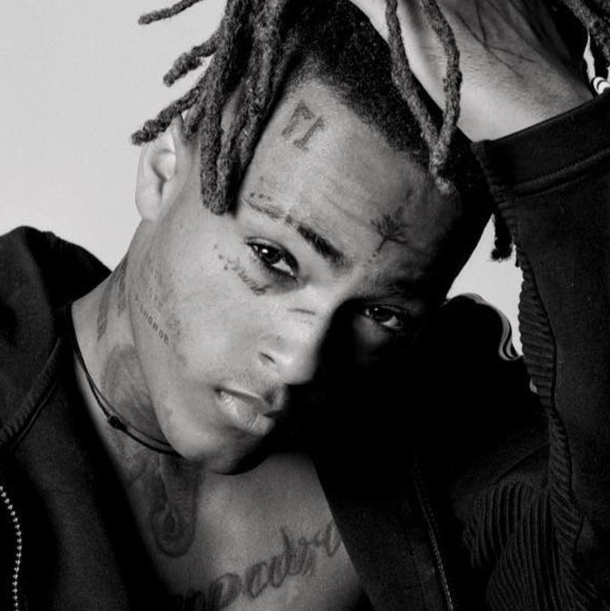

38,108,676 Monthly Listeners

XXXTENTACION
About Artist
Controversial rapper Jahseh Dwayne Onfroy (aka XXXTENTACION) played fast and loose when it came to genres, often incorporating elements of punk rock, hip-hop, R&B, and heavy metal. In the late 2010s, he experienced a quick rise with his dark and emotionally intense content, scoring a number one album with 2018's ?. Months later, at this peak in popularity, he was shot and killed. Born in South Florida, Onfroy had a troubled upbringing, often getting into violent situations; his mother couldn't cope with raising him alone, so he was often forced to stay with various relatives as a result. At a very young age, Onfroy was sent to a juvenile detention center after committing armed robbery; it was there that he met friend and longtime collaborator Ski Mask the Slump God. After his release, both Onfroy and Ski Mask decided to get clean and pursue a career in music, setting up the Florida rap crew Members Only in the process.
In 2014, Onfroy uploaded his first track to SoundCloud, "Vice City," which quickly racked up hundreds of thousands of streams. Later the same year he released two EPs, The Fall and Ice Hotel; the broad array of genres and vocal styles -- ranging from whispering and singing to rapping and outright screaming -- earned Onfroy a cult following in under a year. In 2015, he released two collaborative albums, Members Only, Vol. 1 and Vol. 2 -- alongside the Slump God and various Members Only associates -- as well as his third and fourth EPs, ItWasn'tEnough and Willy Wonka Was a Child Murderer.
His debut album, Bad Vibes, was originally intended to be a mixtape released in 2016; however, the expansion of the record into a full-length studio album, coupled with two different incarcerations, repeatedly delayed the album's release. Single "Look at Me!," originally released in early 2016, became a sleeper hit, and was re-released in 2017, at which point it hit the Top 40 of the Billboard Hot 100 singles chart.
While serving a prison sentence in 2017, Onfroy signed a deal with Empire Distribution. The label released Revenge, an eight-song mixtape of previously released XXXTENTACION material, in May of 2017. The set broke into the Top 50 of the Billboard 200 and climbed to 21 on the R&B/hip-hop chart. Onfroy's official studio debut arrived months later on Bad Vibes Forever/Empire. The moody 17 featured the singles "Revenge" and "Jocelyn Flores," his tribute to a friend who committed suicide. Upon release, 17 climbed to the number two spots on the Billboard 200 and R&B/hip-hop chart, also topping the R&B albums chart. Early the next year, his sophomore full-length, ?, was released. Debuting atop the Billboard 200, the effort featured appearances by Joey Bada$$, Travis Barker, PnB Rock, and more. Onfroy soon signed a multi-million dollar deal with Empire Distribution. Weeks later, on June 18, 2018, Onfroy was shot and killed in Miami. Following his death, fan outpouring helped push ? to platinum certification.
His first posthumous album, Skins, arrived later that year. ~ Liam Martin, Rovi